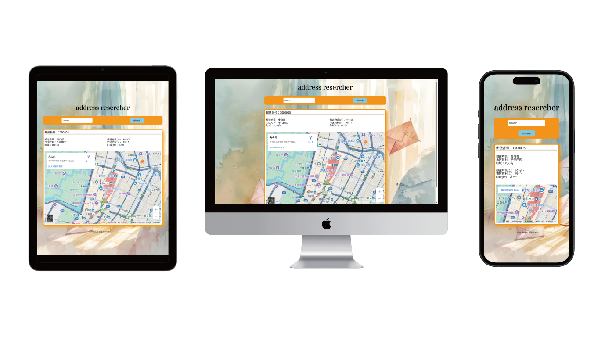

【自主制作】
住所検索アプリ


OVERVIEW
誰でも使えるシンプル住所検索
住所検索のWebアプリケーションです。
誰もが簡単に利用できるように、簡単な操作で知りたい情報が得られる体験を実感させました。
- 担当範囲：ディレクション・デザイン・コーディング
- 使用ツール：HTML・CSS・JavaScript・React・TypeScript・Figma
- 制作期間：1週間
PURPOSE/TARGET
目的
郵便番号から地名の検索
ターゲット
郵便番号から地名や所在地を確認したい人(年齢・性別不問)
POINTS
React・TypeScriptを用いたアプリ設計
本作品では住所入力だけで町名までの情報と地図表示するように設計しました。設計する上でデータ型を明示することで意図しない値の混入やバグを防ぐためReactとTypeScriptを組み合わせました。
郵便番号APIとの連携
入力されたデータをもとに情報を出力させるため、郵便番号APIを連携させました。また、入力された番号から地図情報を正確に表示できるよう、リンクの調整を行いました。
デザイン面
オレンジ系とーを用いることで郵便のイメージをデザインしました。また、コンテンツ枠に丸みを付け、背景に手紙が描かれている落ち着いた画像を用いることで、優しい印象を与えさせました。
配色
フォント
- Noto Sans JP
- Stardos Stencil